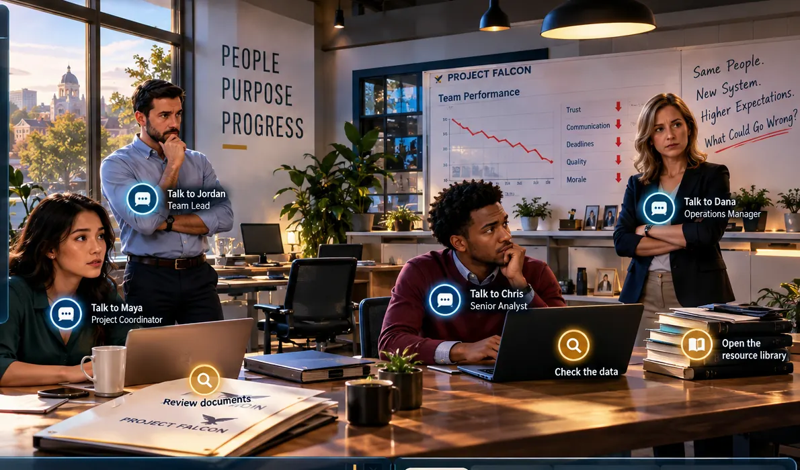

ADVENTURE 01 · TEAM LEADERSHIPThe Fractured Team — Project Falcon
Investigate a struggling team, piece together evidence, diagnose its development stage, balance task and relationship behaviors, and rebuild a shared vision.
FoundationsTeam developmentTraits & ethics
Enter the team office →